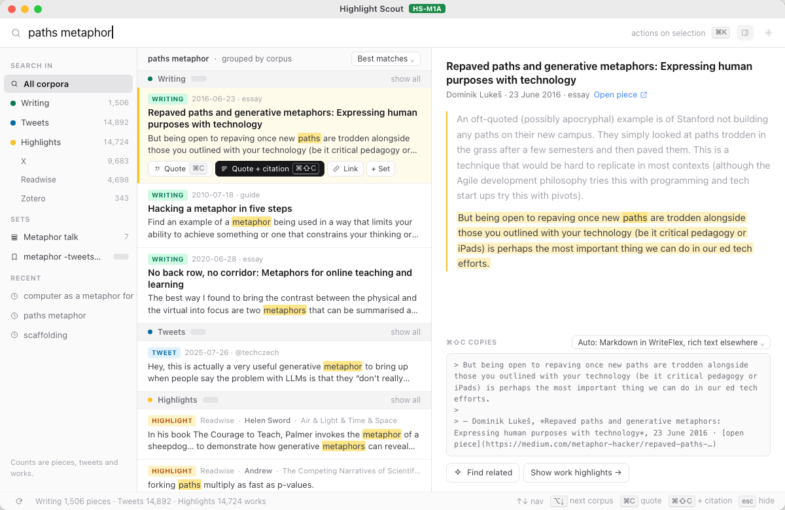
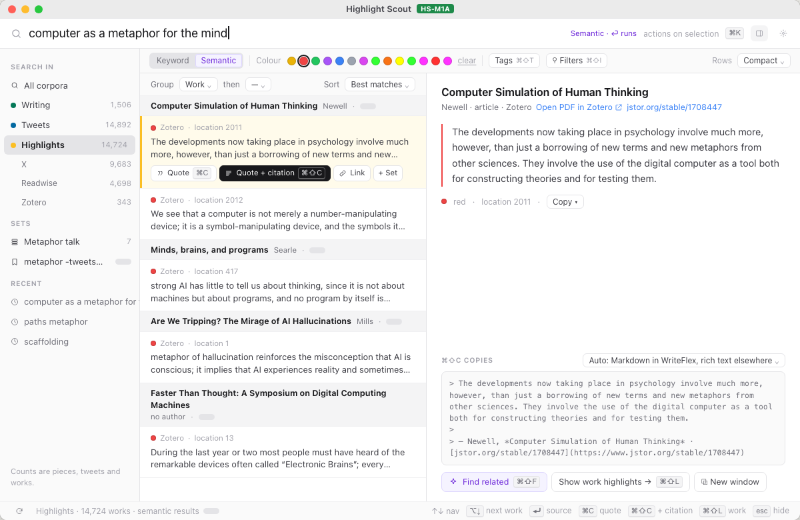
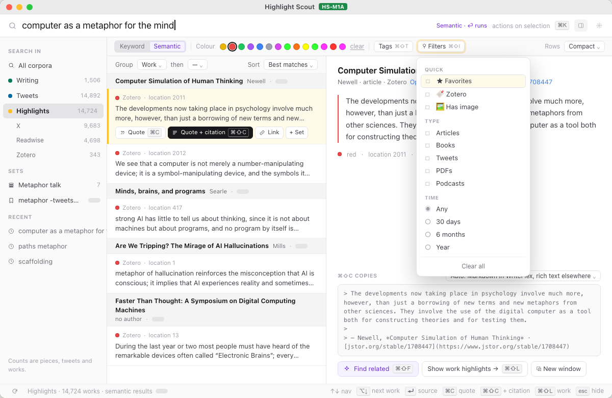
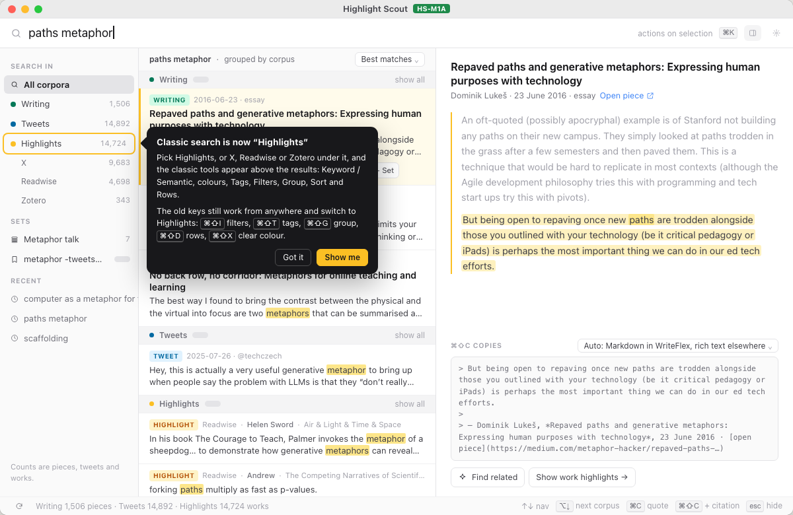
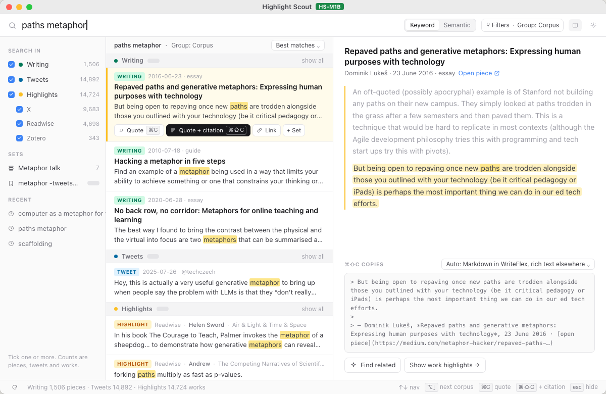
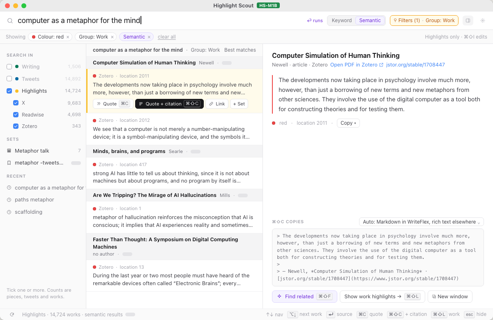
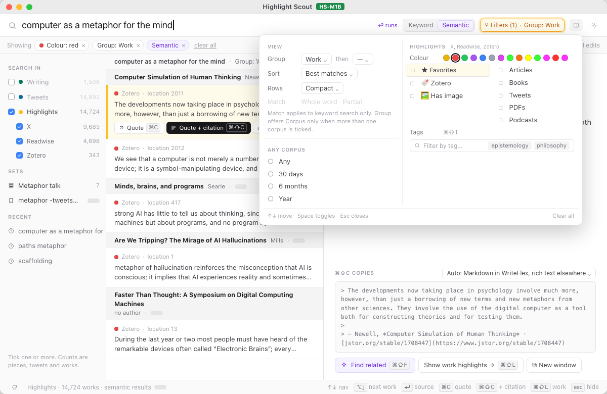
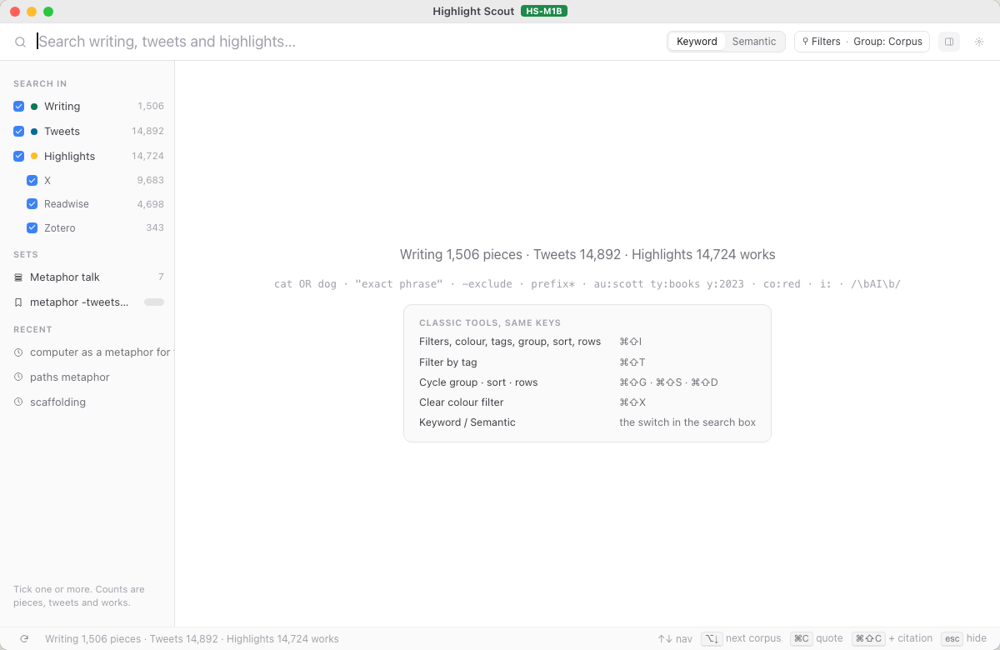

Highlight Scout: one merged search, design round 2
On preview.2 Dominik said the switch to the new search was confusing and the two searches should merge. Two directions, four frames each, drawn at the app’s real window (1200 × 780) inside the HS-1B frame he picked in round 1. Every Classic control is kept; classic-controls.md lists each one and where it lives in each direction. Frame 2 uses real red Zotero highlights from the index; grey pills are counts not known yet. Pick one direction, or name the parts to mix.
The rail is the scope
Picking Highlights (or X, Readwise, Zotero) in the rail reveals a slim bar with Classic’s tools; under All corpora the grouped view stays as it is. Frame 4 is a one-time card pointing at Highlights; the old shortcuts also switch there.












One list, one Filters control
Tick boxes in the rail choose corpora; Keyword / Semantic is a switch inside the search box; every other Classic tool sits behind one “Filters · Group” popover that adapts to the ticked corpora, with removable chips. Frame 4 needs no hint: the empty window carries the grammar line and the old keys.










